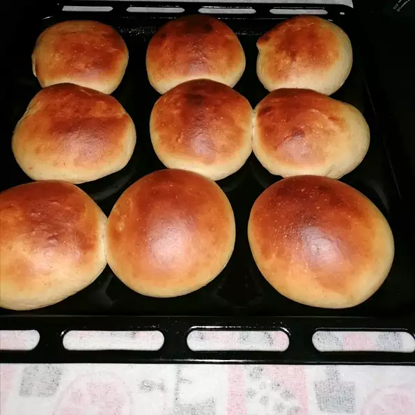

Tasty Buns

Description
Excellent yeast buns that can be used for hamburgers or just plain dinner rolls. They don't take long to make and have never failed for me!
Ingredients
- 5 cups all-purpose flour
- 2 (.25 ounce) packages dry yeast
- 1 cup milk
- ¾ cup water
- ½ cup vegetable oil
- ¼ cup white sugar
- 1 teaspoon salt
Steps
- Stir together 2 cups flour and the yeast. In a separate bowl, heat milk, water, oil, sugar and salt to lukewarm in microwave. Add all at once to the flour mixture, and beat until smooth, about 3 minutes.
- Mix in enough flour to make a soft dough, 2 to 3 cups. Mix well. Dust a flat surface with flour, turn dough out onto floured surface, and let rest under bowl for about 10 minutes.
- Shape dough into 12 slightly flat balls, and place on greased baking sheet to rise until doubled in size.
- Bake in a preheated 400 degrees F (200 degrees C) oven for 12 to 15 minutes.